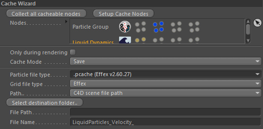
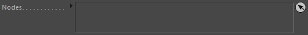
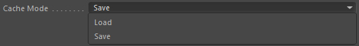
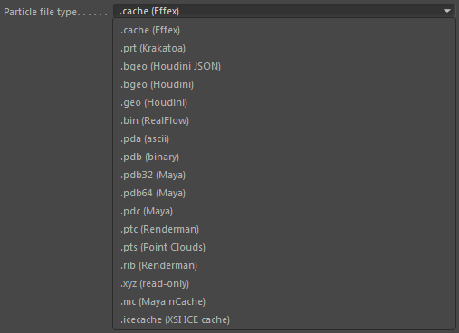
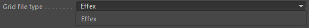
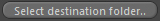
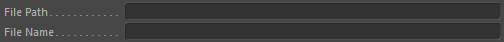
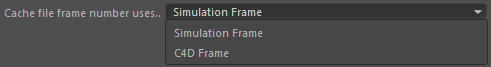
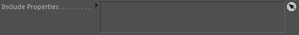

Cache Wizard

Caching (saving simulation data into files on your HD) is one of the important sections repeatingly appearing on the schedule.
That's why Effex has a Cache wizard that helps with the setup to save and load caches easily.
Note: The settings in here do NOT cache anything themselves! It is only lending a hand defining the settings for the objects that take over the caching.
Collect all cacheable nodes
Clicking this button is probably the first thing you will do. It will collect all child objects that can be cached by Effex.
The nodes list below will be filled with the according objects. If you don't want an added object to be included in the caching process
you can now manually remove it from the list.
Setup Cache Nodes
Clicking this button is the last thing you will do. It will create, based on the collected nodes and your other Cache Wizard settings, the Caching objects
(Particle Cacher, Grid Cacher, Mesh Cacher) that will take care of the caching (saving or loading) during simulation.
Nodes

List of objects that can be cached. Filled by clicking the Collect all cacheable nodes button.
Only during rendering
Any operations are only executed during rendering (picture viewer/NET).
Cache Mode

Define what caching mode you want to set up. Load or Save.
Create Another Effex Scene
(Only available if Cache Mode::Load)
Most of the time when you load your caches, you are finished setting up the simulation and you want to either
check the saved cache result quickly or you load saved caches for rendering (either tests or final rendering).
As the Effex scene runs the simulation no matter what objects are in there (even if you load caches, the framework doesn't care;
it keeps on stepping based on the settings of the Effex Scene), optimizing the current Effex Scene with all the simulation objects
in it, can be tedious (you would need to turn off all objects that are not needed anymore when loading cached data).
Create Another Effex Scene therefore allows you to set up another Effex Scene that only contains objects that are required in order to
load the saved caches. This saves valuable time and it has another advantage: you can switch between saving and loading without further
hassles by simply deactivating the corresponding Effex scene object.
And of course you can extent and modify the loaded cache scene just as usual (that is the advantage of the framework not caring..).
This for example allows to split simulation (e.g. dynamics) and render elements (surface reconstruction, meshing..) into different stages.
Particle file type

Defines the out-/input file type for any generated Particle cachers.
The Effex format however is the only format that supports storage of multiple Particle Groups. So if you are not exchanging data with other applications
you probably want to stick to the Effex format. It's also the fastest format and provides highest compatibility and support.
Grid file type

Defines the out-/input file format for any generated Grid cachers (if they exist in the Nodes list).
Path

Defines the folder mode.
C4D scene file path
Uses the C4D scene file path. The scene must have been saved.
User-defined
Uses the path defined by the user. See File Path
Select destination folder

Opens the folder selection dialog of your OS in order to let you choose a user defined in-/output path.
The result of your choice will be displayed in the File Path field.
File Path

The current user-defined in-/output path. You can manually change the path here or use Select destination folder...
File Name
The file name of the in-/output files WITHOUT the file type extension (suffix) and without any frame numbers.
Effex requires a special naming convention of the file sequences to be loaded correctly:
[File Name][Frame Number encoded in 5 digits].[SUFFIX]
No dots may be used in the file sequence names. Only the file suffix should have a dot in front of it.
Example for a valid file sequence name (in this case frames 127 and 128 of Houdini's bgeo file format):
myFilenameTest00127.bgeo
myFilenameTest00128.bgeo
etc.
This sequence could be loaded by setting 'File Name' to "myFilenameTest".
Cache Wizard::Load
Only initialise
Only initialise will force the cachers to only operate in the first frame. This is useful if you want to let a simulation
start from a certain cache frame on (it loads the cached data to initialise the simulation).
Reverse loading order
This will reverse the loading order of cached frames.
Instead of loading the first frame first, it will load the last frame first.
Frame to Load
Controls the frame which should be loaded. If this setting is at -1, it will automatically detect the correct frame based on the current C4D frame.
So it sequentially loads the caches. Any other value >= 0 will directly load the corresponding cache frame (so if set to 21 it will load cache frame 00021).
Frame Offset
Adds an offset to the cache frame number to be loaded.
An offset of -10 for example will let the loading only start at frame 10 (loading cache frame 0).
An offset of +10 will load cache frame 10 at frame 0.
Cache Wizard::Save
Compress if possible
This will activate compression of data during cache saving. This will reduce the file sizes tremendously, however writing & loading
will be slower (writing is already quite a slow operation in the pipeline...depending on your hard drive).
Cache file frame number uses..

Controls which frame number to encode into the file name of the cache files.
Simulation Frame
The simulation frame is used. This is the default setting. The first simulation frame will always be 00000.
C4D Frame
The C4D frame is used. The first C4D frame does not necessarily have to be frame 0.
If your document timeline range starts with 61234, then the first cache frame will be named cacheFileName61234.cache.
Include Properties

Particle Cachers by default store the position and velocity properties of particles (because these are always available).
If you want more properties included in the cache you can drag & drop them in here and it'll happen.